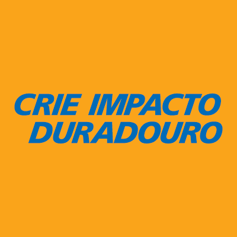

Rotary Club de Bauru
Ano rotário 2026-27 - Plano de Atividades
PAULO ROBERTO XAVIER
Presidente
Rotary Club de Bauru

Monaliza A Salemme Marega
Governadora do Distrito 4510
Rotary Club de Marília-Pioneiro
Olayinka Hakeem Babalola
Presidente do Rotary International
Rotary Club de Trans Amadi
Clique para consultar